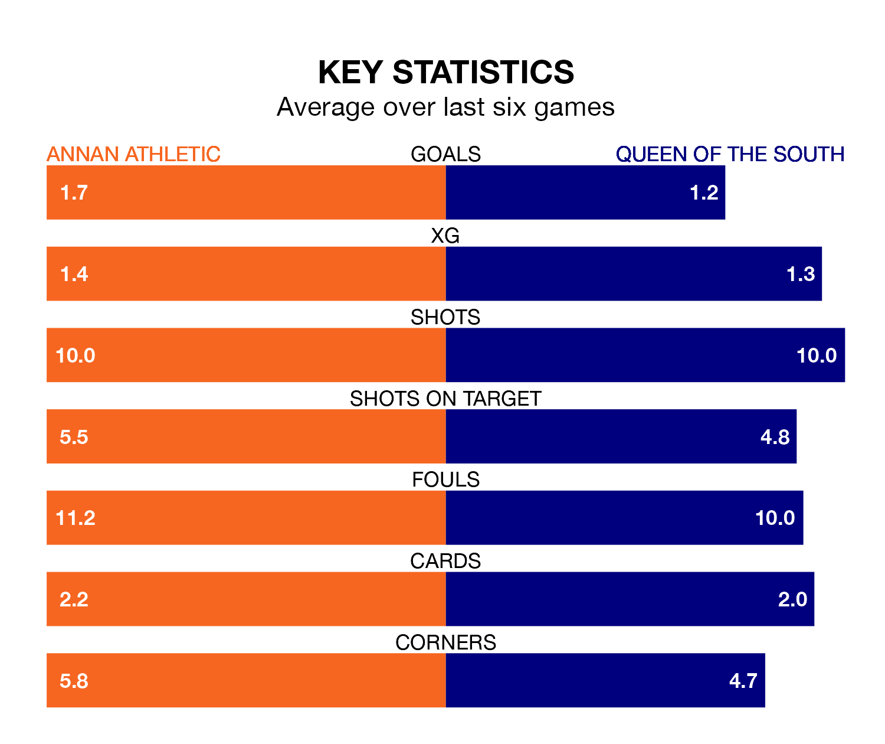

Saturday's match at Galabank sees two relegation candidates play each other, as ninth-ranked Annan Athletic host eighth-placed Queen of the South.
Annan have picked up 23 points from their first 23 League One games, with five wins and eight draws.
That is seven points less than the Doonhamers have collected, having won eight and drawn six.
In the last 10 years, Annan and Queen of the South have played each other on six occasions. Annan won one of them, Queen of the South four, and they drew once.
On average, the Galabankies scored 1.5 goals and the Doonhamers 2.3 in those matches.
Their last meeting was on December 30, when Queen of the South won 2-1 at home.
With 35 goals in 27 games so far this season, Queen of the South are scoring at below the league average rate with 1.3 goals per game. And they are conceding at an average rate, letting in 42 goals at a rate of 1.6 per game.
Annan are also below average scorers, with 1.4 goals per game, compared to a league average of 1.6. They have conceded 2.0 goals per game.
In Thomas Goss, Athletic have one of the league's most on-form strikers so far this season. He has notched eight goals in 23 appearances, to sit fifth in the scoring charts.
His goal rate of one every 224 minutes is quicker than that of Gavin Reilly, the Doonhamers's top scorer with a goal every 248 minutes, and a total of seven goals in 22 games.
The Galabankies are in mixed form in League One, with two wins and a draw from their last six games.
With a win and three draws over that period, the away team's form is slightly worse – they have taken six points from 18, compared to the hosts' seven.
Annan's last match was on March 2, a 1-1 draw against Falkirk, with Tommy Muir getting the goal for the Galabankies.
Queen of the South drew 2-2 with Stirling Albion last time out, also on March 2, with Alexander Ferguson and Josh Todd on the scoresheet.
Saturday's match will be refereed by Colin Steven, who has taken charge of five League One games so far this season, issuing no red cards and booking 14 players. He has not awarded any penalties.
The last Annan game Steven refereed was a 3-2 home win against Edinburgh City on August 26. His last Queen of the South match was their 1-0 loss away at Falkirk on September 16.
Updated: 09:34 (UTC), 08/03/24